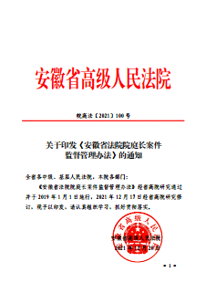

-
安徽省高级人民法院
工作报告
──2022年1月18日在安徽省第十三届人民代表大会第五次会议上
-

各位代表：
现在，我代表省高级人民法院向大会报告工作，请予审议，并请省政协各位委员提出意见。
-
2021年主要工作
2021年，省高级人民法院坚持以习近平新时代中国特色社会主义思想为指导，认真学习贯彻习近平法治思想，在中共安徽省委坚强领导下，在省人大及其常委会有力监督下，奋力推动法院各项工作取得新进展。
-
全省法院
受理案件1690346件
同比上升20.69%
办结1621678件
同比上升17.56%
结案率95.19%
居全国法院第3位
省高院
受理案件31390件
同比上升25.48%
办结30472件
同比上升23.52%
结案率94.82%
居全国高院第1位
生效裁判服判息诉率98.07%
高于全国法院平均值0.35个百分点
43件案件被最高法院确定为优秀（典型）案例
12项审判执行质效指标位居全国法院前列
7项工作被中央政法委、最高法院推介
最高法院主要领导10次批示肯定安徽法院工作
-

深入学习贯彻习近平法治思想
扎实开展法院队伍教育整顿
-

有序推进我省法院队伍教育整顿，
打造忠诚干净担当的法院铁军
-
1 筑牢政治忠诚


-
开展政治轮训68159人次，
举办党史学习教育专题报告会487场
举办党的十九届六中全会精神学习宣讲382次
加强习近平法治思想学习研讨，树立正确司法观
制定贯彻政法工作条例12条举措
健全党中央决策部署及省委工作要求督办落实机制
-
2 强化自我革命1
持续开展警示教育和专项整治，净化修复政治生态
2全系统整治“减假暂”、执行、诉讼费退费等方面顽瘴痼疾2259个
3全年处分违纪违法干警355人，同比上升84.9%
4制定完善干警业外活动行为规范等10项制度
-
3 激励实干担当

最高法院、安徽省委联合召开追授魏晶晶同志荣誉称号表彰大会暨安徽省政法英模先进事迹报告会
-
全省法院涌现出樊瑾、秦山成等一批先进典型
33个集体、54名个人受到最高法院和省委、省政府表彰表扬
择优遴选员额法官115名，选升高级法官209名
联合纪检监察部门为6名遭受诬陷的干警澄清正名
防止干预司法“三个规定”记录平台报告信息3887条
-

贯彻总体国家安全观
推动建设更高水平平安安徽
-

审结刑事案件52941件，同比上升10.56%
判处罪犯66028人，同比上升7.11%
-
1 常态化开展扫黑除恶斗争
 审结黑恶案件188件 提出司法建议125条审结涉黑恶保护伞案件15件 执行到位涉黑恶财产37.88亿元
审结黑恶案件188件 提出司法建议125条审结涉黑恶保护伞案件15件 执行到位涉黑恶财产37.88亿元 -


-
2 坚决维护国家安全和社会稳定

“6·5”步行街持刀杀人案庭审
-
审结
严重暴力犯罪案件678件
毒品犯罪案件890件
涉疫情犯罪案件327件
袭警犯罪案件224件
涉众型经济犯罪案件415件,为群众追赃挽损3.6亿元
-
3 依法惩治各类职务犯罪

审结贪污贿赂等犯罪案件460件539人
审结基层腐败犯罪案件116件139人
审结渎职犯罪案件52件62人
审结行贿犯罪案件38件52人
-
4 依法严惩电信网络诈骗犯罪
审结电信网络诈骗犯罪案件742件2809人,同比分别上升194.44%、308.28%
审结帮助信息网络犯罪活动案件1167件
审结侵犯个人信息犯罪案件129件
依法打击网络套路贷、校园贷、美容贷等犯罪行为
-
5 加强未成年人司法保护

审结侵害未成年人犯罪案件424件
联合出台保护农村留守儿童权益意见
全省法院少年法庭审判机制全覆盖
-
6 加强人权司法保障

依法宣告22名公诉案件和13名自诉案件被告人无罪，对23995名轻微犯罪被告人适用非监禁刑

联合省检察院规范23种常见犯罪量刑

应用刑事智能辅助办案系统办案41778件，指定辩护律师17458人次

审结国家赔偿案件281件，发放司法救助金6009.2万元
-
7 积极推进社会治理
助推社区矫正，对1256名罪犯回访帮教


依法审理涉见义勇为、正当防卫等案件132件
发布司法审判报告40个，网上直播庭审304495场

-

制定推动矛盾纠纷源头化解工作意见
推广“蜀山经验”
-

推动营造法治化营商环境
服务高质量发展
-
同比上升
21.91%
审结民商事案件
844025件
同比上升
21.83%
审结行政案件
16568件
-
1 服务创新驱动发展

审结知识产权案件10608件
知识产权案件判赔金额同比增长55.41%
连续6年举办皖江知识产权司法保护论坛
-
2 服务新兴产业发展

审结人工智能、网络游戏等数据交易、服务案件76件

审结涉外卖骑手、快递小哥、网约车司机等案件25件

审结破产案件236件，盘活土地4.8万亩

审结涉外涉港澳台案件529件，办理国际司法协助案件147件
审结新型消费纠纷案件52989件，同比增长23.84%
-
3 服务民营经济发展

出台服务保障民营经济高质量发展实施意见
审结民营企业案件273993件，同比上升28.87%
依法对12538家民营企业采取“活封”“活扣”保全措施
审结金融借款、证券期货、民间借贷等案件201453件，同比上升17.91%
-
4 促进生态文明建设
审结环境资源案件16358件，其中环境公益诉讼案件227件
审结大气污染等环境侵权责任纠纷案件79件
审结非法捕捞水产品案件322件
判赔生态环境修复费用7773.61万元
-
5 服务保障国家重大战略实施

出台司法保障长三角一体化发展16条意见，审结涉沪苏浙企业民商事案件33545件
-

省高院深化司法协作服务保障长三角一体化发展入选我省2021年度“十大法治事件”
-
6 依法保护诚实守信

审结各类合同纠纷案件540096件；联合出台防范惩治虚假诉讼工作指南；建立健全守信激励机制
-
7 监督行政机关依法行政
-

巩固“江淮风暴”执行攻坚成果
持之以恒向切实解决执行难进军
-
受理执行案件558092件，同比上升42.62%；
结案率96.45%，居全国法院第2位
执结标的额2137.94亿元
实际执行到位金额514.1亿元
-
1 始终突出执行强制性

执结涉民生案件50401件
执结涉金融债权案件21665件
执结涉党政机关案件1211件
执结涉民营企业案件17056件
-
冻结、扣划资金327.93亿元，查控车辆144.27万辆、房产649.19万套
发布失信名单227673人次，限制高消费329961人次
45390名失信被执行人迫于压力自动清偿债务47.87亿元
“6·18”“11·11”网络司法拍卖活动成交金额21.8亿元
-
2 深化执行难综合治理、源头治理
认真贯彻我省从源头切实解决执行难问题实施意见
加强执行联动
推进执行指挥中心实体化运行
跨区域发起执行事项委托68032件、受理事项委托93916件、异地执行922件
-
3 持续加强执行规范化建设

建立健全16项制度
应用智慧执行APP办理案件10682件
全省法院执行结案平均用时缩短69天
-
践行司法为民宗旨
保障人民群众高品质生活
-
1 加强民生司法保障
-
2 深化一站式多元解纷和诉讼服务体系建设
 网上立案270898件、提供跨域立案服务4414件
网上立案270898件、提供跨域立案服务4414件
 在线调解案件393169件，同比增长34.3%
在线调解案件393169件，同比增长34.3%
 安徽法院诉讼服务质效2.0+版得分居全国法院第3位
安徽法院诉讼服务质效2.0+版得分居全国法院第3位
-
3 着力化解涉诉信访
办理来信来访27793件次， 351名领导干部在“接访周”接访群众709批次， 依法清理信访积案2796件
-
4 提升基层司法水平
设立专业化人民法庭（巡回法庭）86个
为基层法院充实员额法官89名、配备审判辅助人员516名
培训基层干警11556人次、特邀调解员685人次
-

聚焦主责主业
完善审判管理
深化司法改革
-
1 强化以执法办案论英雄正确导向
员额法官人均审执结案件数居全国法院第6位
院庭长审执结案件数占结案总数的48.97%
41名违纪违法、业绩不达标法官退出员额
-
2 强化均衡结案指挥棒作用
-
3 强化审判制约监督
强化院庭长个案监督
强化审级监督、审判监督
-

增强接受监督意识
加强和改进法院工作 -
1 自觉接受人大监督

专项报告民事合同纠纷案件审判工作
-
 向省人大常委会述职54人次，提请任命法律职务12人次
向省人大常委会述职54人次，提请任命法律职务12人次
 完善办理制度，办结代表建议24件
完善办理制度，办结代表建议24件
 回应代表关切，制定15项改进工作的制度举措
回应代表关切，制定15项改进工作的制度举措
-

开展省人大代表跨区交叉视察法院等活动
邀请省人大代表旁听庭审、见证执行等2430人次，征求意见建议2752条。
-
2 主动接受民主监督
办理政协提案15件

一审普通程序案件陪审率达73.67%

-
3 依法接受监察监督 、检察监督审计监督和社会监督
 自觉接受监察机关对法院工作人员进行监督
自觉接受监察机关对法院工作人员进行监督
 审结抗诉案件1272件，依法改判117件
审结抗诉案件1272件，依法改判117件
 聘请37名律师担任特约监督员
聘请37名律师担任特约监督员
 召开新闻发布会69场，举办“公众开放日”活动619场
召开新闻发布会69场，举办“公众开放日”活动619场
-
2022年
工作安排1着力筑牢忠诚根基
2着力守牢安全稳定底线
3着力护航经济高质量发展
4着力维护群众合法权益
5着力严格公正高效司法
6着力推进全面从严治党、从严治院
-
新的一年，全省法院将更加紧密团结在以习近平同志为核心的党中央周围，在中共安徽省委的坚强领导下，认真落实本次会议决议，奋发有为、勇毅前行，推动全省法院工作高质量发展，为加快建设现代化美好安徽作出新的更大贡献，以优异成绩迎接党的二十大胜利召开！